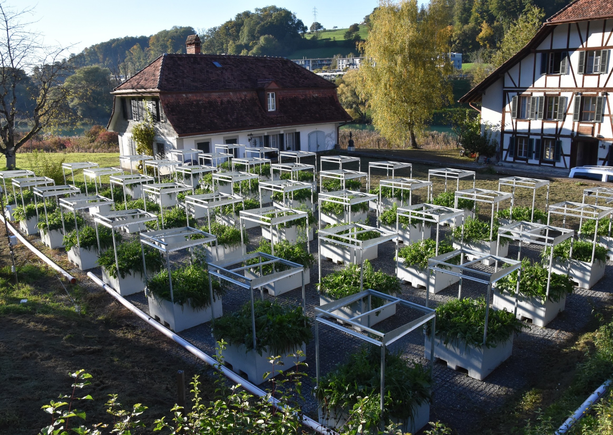

Drought soil legacy effects and species coexistence

Overview
Local plant communities are increasingly exposed to recurrent climate extremes, yet the mechanism through which past drought events shape future community assembly remains poorly understood. In this project, I investigated how historical drought alters plant species interactions through persistent changes in soil microbial and nutrient legacies. Using soil collected from the long-term HOME (Hasli Outdoor Mesocosm Experiment) , I combined soil legacy treatments with a controlled competition experiment to quantify how drought history influences niche and fitness differences among plant species. Overall, this work links long-term drought legacies in soils to the mechanisms that maintain species coexistence and predict community responses to future climate change.
Research questions
→ How do drought-induced changes in soil microbial communities affect species coexistence?
→ Do drought soil legacies alter niche and fitness differences among competing plant species?
→ Can soil legacy effects change our predictions of plant community responses to future climate extremes?